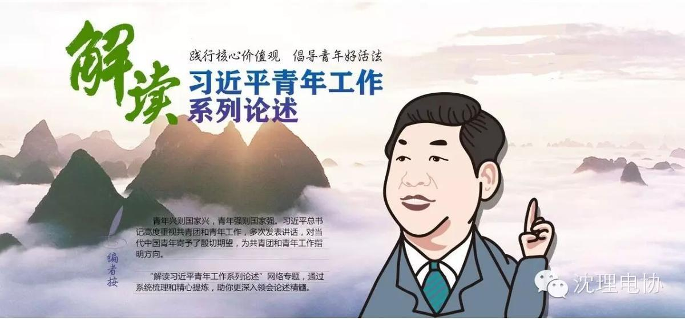
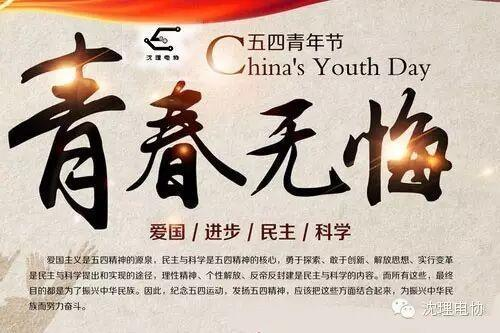
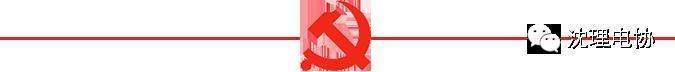

五四，听习大大讲青年。

习近平告诉青年的10句座右铭：信念、青春和奋斗
我到农村插队后，给自己定了一个座右铭，先从修身开始。一物不知，深以为耻，便求知若渴。上山放羊，我揣着书，把羊圈在山坡上，就开始看书。锄地到田头，开始休息一会儿时，我就拿出新华字典记一个字的多种含义，一点一滴积累。我并不觉得农村7年时光被荒废了，很多知识的基础是那时候打下来的。现在条件这么好，大家更要把学习、把自身的本领搞好。
——2013年5月，习近平五四青年节参加主题团日活动时的讲话
生活从不眷顾因循守旧、满足现状者，从不等待不思进取、坐享其成者，而是将更多机遇留给善于和勇于创新的人们。青年是社会上最富活力、最具创造性的群体，理应走在创新创造前列。
——2013年5月，习近平同各界优秀青年代表座谈时的讲话
广大青年要牢记“空谈误国、实干兴邦”，立足本职、埋头苦干，从自身做起，从点滴做起，用勤劳的双手、一流的业绩成就属于自己的人生精彩。要不怕困难、攻坚克难，勇于到条件艰苦的基层、国家建设的一线、项目攻关的前沿，经受锻炼，增长才干。要勇于创业、敢闯敢干，努力在改革开放中闯新路、创新业，不断开辟事业发展新天地。
——2013年5月，习近平同各界优秀青年代表座谈时的讲话
青年朋友们，人的一生只有一次青春。现在，青春是用来奋斗的；将来，青春是用来回忆的。人生之路，有坦途也有陡坡，有平川也有险滩，有直道也有弯路。青年面临的选择很多，关键是要以正确的世界观、人生观、价值观来指导自己的选择。无数人生成功的事实表明，青年时代，选择吃苦也就选择了收获，选择奉献也就选择了高尚。青年时期多经历一点摔打、挫折、考验，有利于走好一生的路。要历练宠辱不惊的心理素质，坚定百折不挠的进取意志，保持乐观向上的精神状态，变挫折为动力，用从挫折中吸取的教训启迪人生，使人生获得升华和超越。总之，只有进行了激情奋斗的青春，只有进行了顽强拼搏的青春，只有为人民作出了奉献的青春，才会留下充实、温暖、持久、无悔的青春回忆。
——2013年5月，习近平同各界优秀青年代表座谈时的讲话
你们在信中写到，中国梦让你们感受到了一份同心奋进的深沉力量，让你们更加懂得了当代青年所肩负的历史责任。说得很好。中国梦是国家的梦、民族的梦，也是包括广大青年在内的每个中国人的梦。“得其大者可以兼其小。”只有把人生理想融入国家和民族的事业中，才能最终成就一番事业。希望你们珍惜韶华、奋发有为，勇做走在时代前面的奋进者、开拓者、奉献者，努力使自己成为祖国建设的有用之才、栋梁之材，为实现中国梦奉献智慧和力量。
——2013年5月，习近平给北京大学考古文博学院2009级本科团支部全体同学回信
我说这话的意思是，实现我们的发展目标，实现中国梦，必须增强道路自信、理论自信、制度自信，“千磨万击还坚劲，任尔东南西北风”。而这“三个自信”需要我们对核心价值观的认定作支撑。
——2014年5月，习近平在北京大学师生座谈会上的讲话
面对世界的深刻复杂变化，面对信息时代各种思潮的相互激荡，面对纷繁多变、鱼龙混杂、泥沙俱下的社会现象，面对学业、情感、职业选择等多方面的考量，一时有些疑惑、彷徨、失落，是正常的人生经历。关键是要学会思考、善于分析、正确抉择，做到稳重自持、从容自信、坚定自励。要树立正确的世界观、人生观、价值观，掌握了这把总钥匙，再来看看社会万象、人生历程，一切是非、正误、主次，一切真假、善恶、美丑，自然就洞若观火、清澈明了，自然就能作出正确判断、作出正确选择。正所谓“千淘万漉虽辛苦，吹尽狂沙始到金”。
——2014年5月，习近平在北京大学师生座谈会上的讲话
现在在高校学习的大学生都是20岁左右，到2020年全面建成小康社会时，很多人还不到30岁；到本世纪中叶基本实现现代化时，很多人还不到60岁。也就是说，实现“两个一百年”奋斗目标，你们和千千万万青年将全过程参与。有信念、有梦想、有奋斗、有奉献的人生，才是有意义的人生。当代青年建功立业的舞台空前广阔、梦想成真的前景空前光明，希望大家努力在实现中国梦的伟大实践中创造自己的精彩人生。
——2014年5月，习近平在北京大学师生座谈会上的讲话
有人说：“圣人是肯做工夫的庸人，庸人是不肯做工夫的圣人。”青年有着大好机遇，关键是要迈稳步子、夯实根基、久久为功。心浮气躁，朝三暮四，学一门丢一门，干一行弃一行，无论为学还是创业，都是最忌讳的。“天下难事，必作于易；天下大事，必作于细。”成功的背后，永远是艰辛努力。青年要把艰苦环境作为磨炼自己的机遇，把小事当作大事干，一步一个脚印往前走。滴水可以穿石。只要坚韧不拔、百折不挠，成 功就一定在前方等你。
——2014年5月，习近平在北京大学师生座谈会上的讲话
我在西部地区生活过，深知那里的孩子渴求知识，那里的发展需要人才。多年来，一批批有理想、有担当的青年，像你们一样在西部地区辛勤耕耘、默默奉献，为当地经济社会发展、民族团结进步作出了贡献。
同人民一道拼搏、同祖国一道前进，服务人民、奉献祖国，是当代中国青年的正确方向。好儿女志在四方，有志者奋斗无悔。希望越来越多的青年人以你们为榜样，到基层和人民中去建功立业，让青春之花绽放在祖国最需要的地方，在实现中国梦的伟大实践中书写别样精彩的人生。
——2014年5月，习近平给河北保定学院西部支教毕业生群体代表回信

